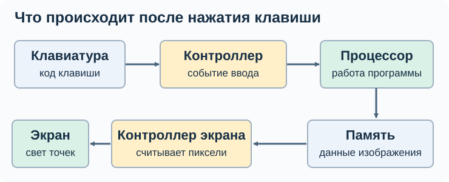

Справочник по C++ и алгоритмам
Для 9–11 классов. Если ты только начинаешь писать на C++, открой «Что такое переменная». Если решаешь задачу, выбери тему по таблице. В каждой главе можно изменить данные в интерактивном примере и проверить, как изменится результат.
Устройство компьютера
Представь, что программа выводит на экран нажатую клавишу. На рисунке стрелки показывают путь информации. Между нажатием и появлением буквы успевают поработать несколько устройств и операционная система.

| Вопрос | Где посмотреть |
|---|---|
| Как электрические сигналы складываются в число? | Логические элементы, перенос и регистр |
Что выполняется, когда в C++ написано value = value + 5? |
Три инструкции процессора |
| Почему два соседних числа часто читаются быстрее? | Кэш, оперативная память и адреса |
| Как напряжение датчика становится числом в программе? | Ввод и вывод |
Язык C++
| Тема | Что можно разобрать на примере |
|---|---|
| Что такое переменная | Как запомнить число, изменить его и сохранить копию |
| Как устроена память | Где лежат элементы массива и что меняет запись через указатель |
| Функции, ссылки и указатели | Как передать значение в функцию и изменить переменную вызывающего кода |
| Массивы, векторы и итераторы | Как хранить последовательность и обходить её элементы |
| Строки | Как прочитать строку с пробелами, найти и выделить подстроку |
| Стандартные алгоритмы и лямбды | Как искать и считать элементы по своему условию |
| Редактирование последовательностей | Как вставлять элементы, удалять повторы и преобразовывать значения |
Биты, маски и std::bitset |
Как проверить один бит числа и хранить набор признаков |
Базовые алгоритмы
В каждой теме есть код на C++ и Python. Индексы начинаются с нуля. В записи [left, right) левая граница входит в диапазон, правая остаётся за ним. Например, [1, 4) охватывает индексы 1, 2 и 3.
| Тема | Когда пригодится |
|---|---|
| Сложность и перебор | Нужно оценить, сколько вариантов успеет проверить программа |
| Сортировка и ключи | Есть несколько правил упорядочивания записей |
| Двоичный поиск | Нужно найти границу в отсортированных данных или минимальный подходящий ответ |
| Префиксные суммы | Один массив или таблица, много запросов суммы |
| Два указателя и скользящее окно | Ищем пару с заданной суммой или самый длинный допустимый отрезок |
| Частоты | Нужно посчитать вхождения значений или пары равных элементов |
| Обходы клеточной карты | Ищем достижимые клетки или кратчайший путь по клеткам |
| Рекурсия и динамическое программирование | Перебираем подмножества или собираем ответ из меньших подзадач |
Прикладные алгоритмы
| Тема | Когда пригодится |
|---|---|
| Состояние и события | Нужно запомнить режим и обработать смену состояния |
| Обработка сигналов | В последовательности измерений ищем устойчивый сигнал или серию |
| Клеточные карты и изображения | Работаем с координатами, поворотами и препятствиями |
Примеры на C++ рассчитаны на C++17. Возможности C++20 отмечены в соответствующих главах. Чтобы пользоваться вектором, подключи #include <vector>. После объявления using std::vector; в примере можно писать vector без префикса std::.